NebuShell is a modern SSH client with a built-in AI ops agent. Multi-tab terminals, SFTP, and a Monaco editor — the agent proposes a plan, you confirm, it runs. Nothing touches your machines without your say-so.
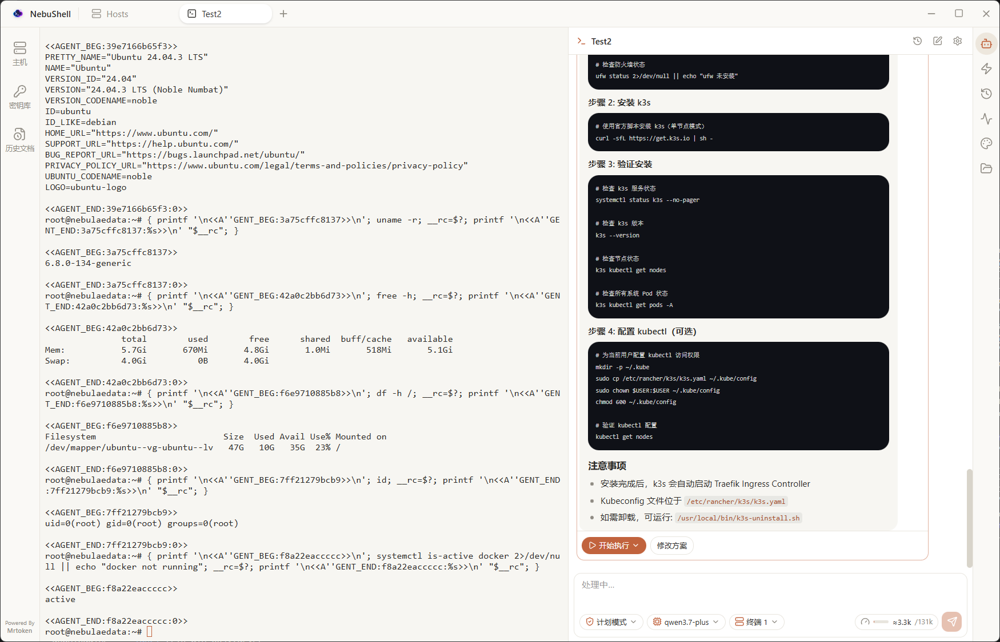
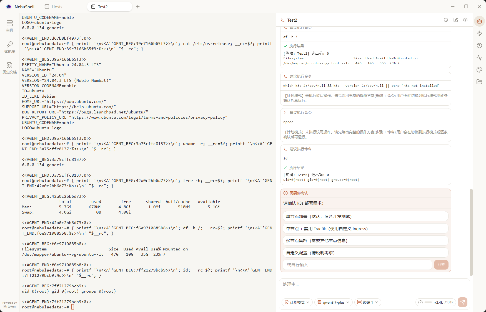
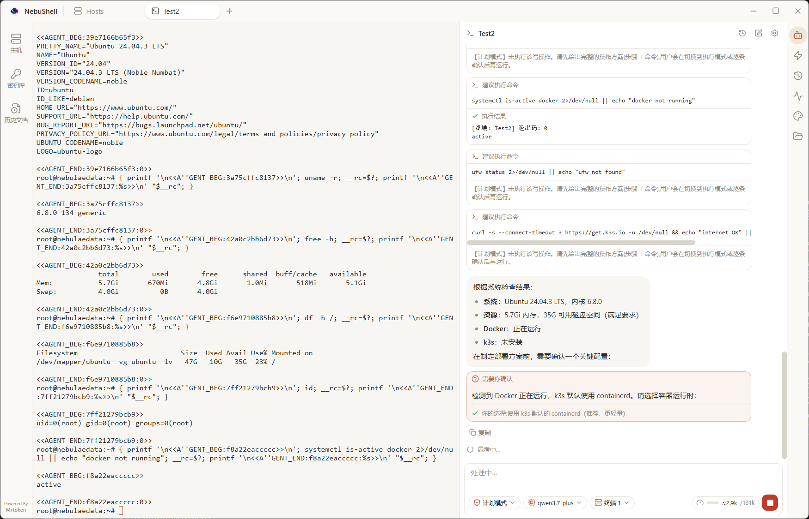
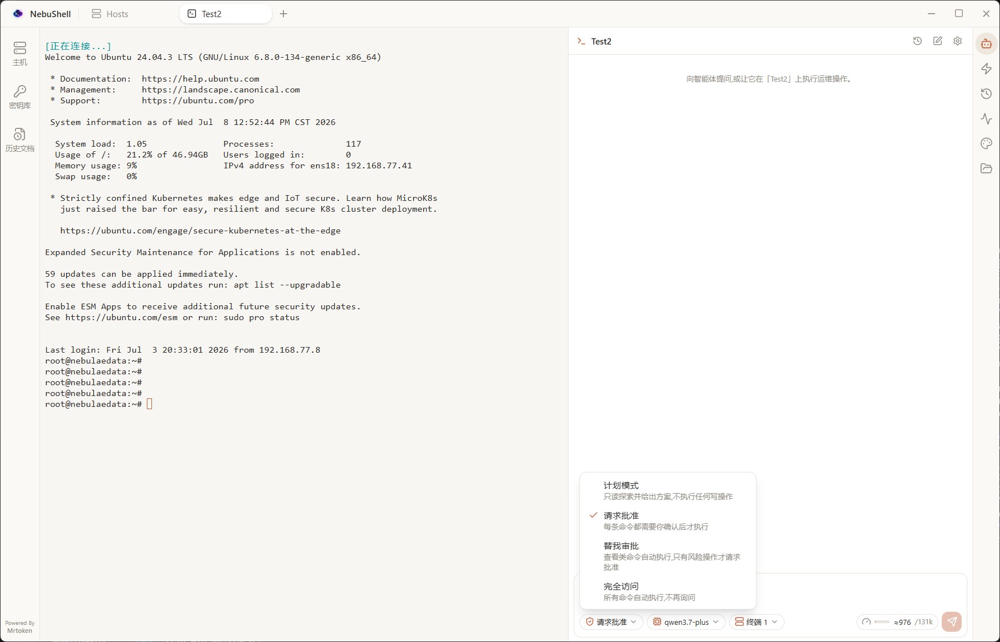
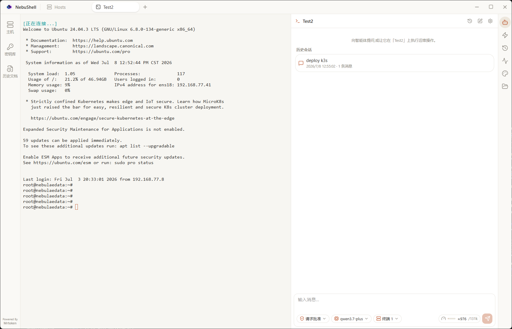
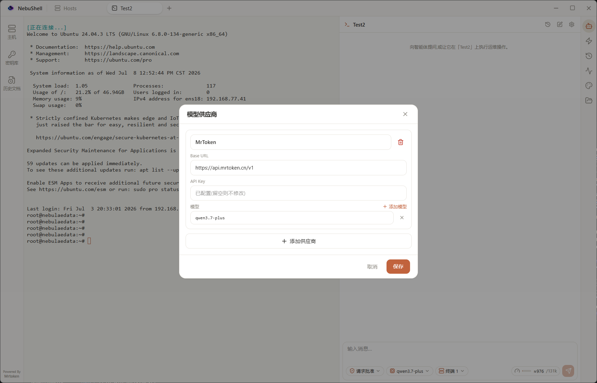
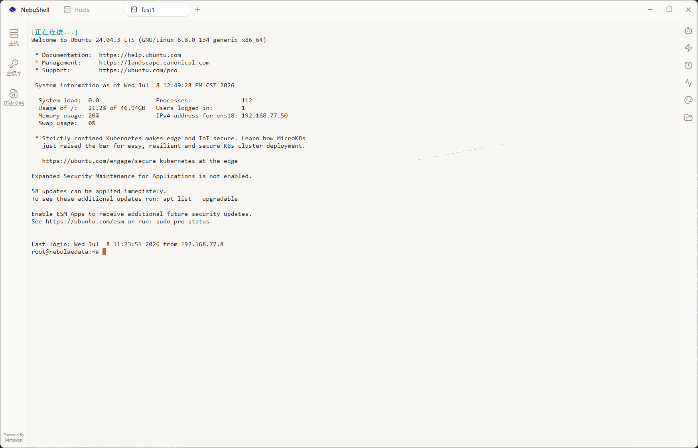
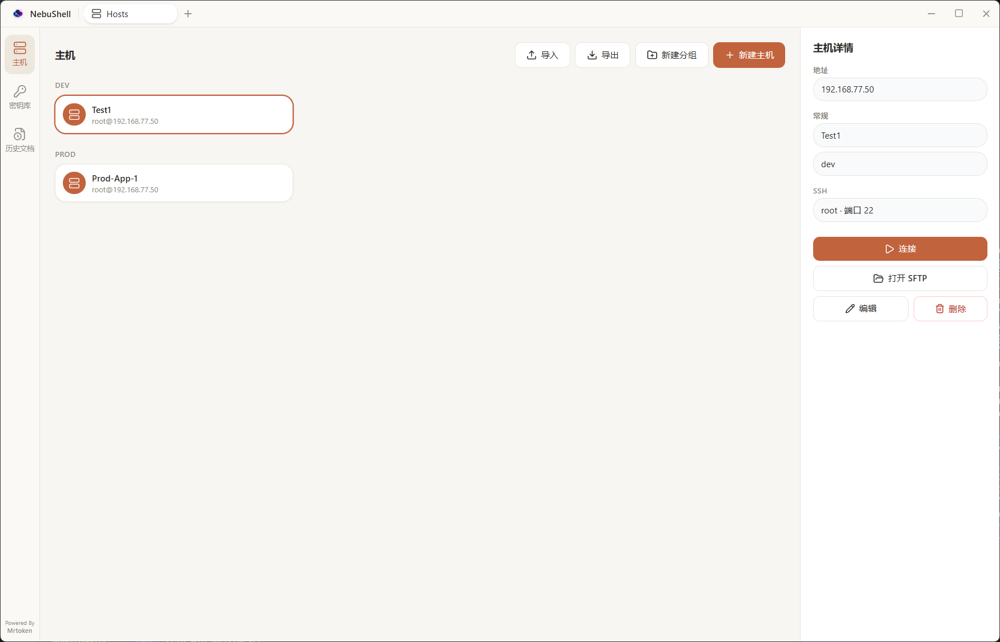
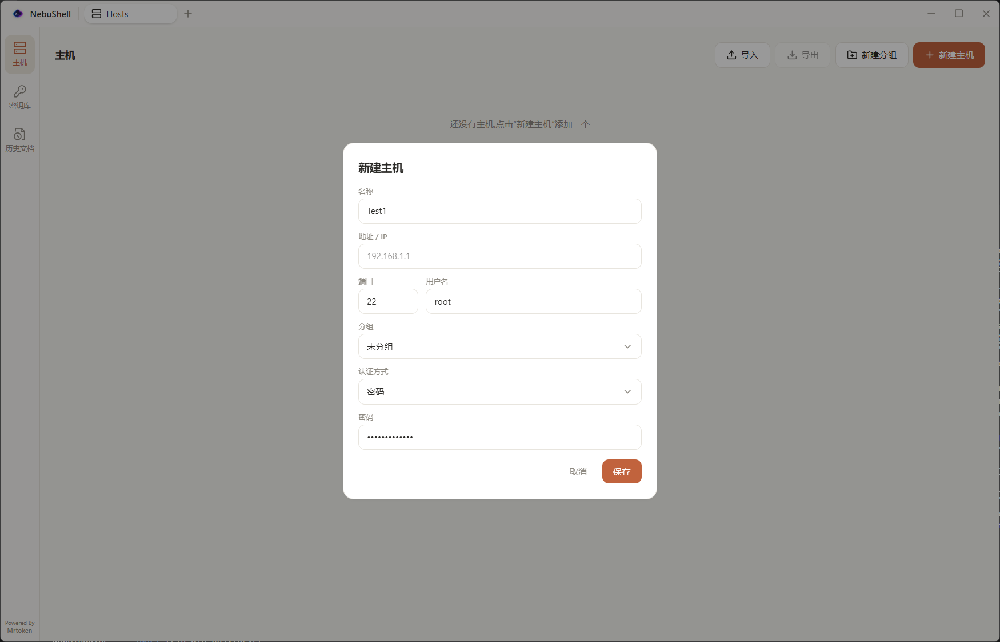
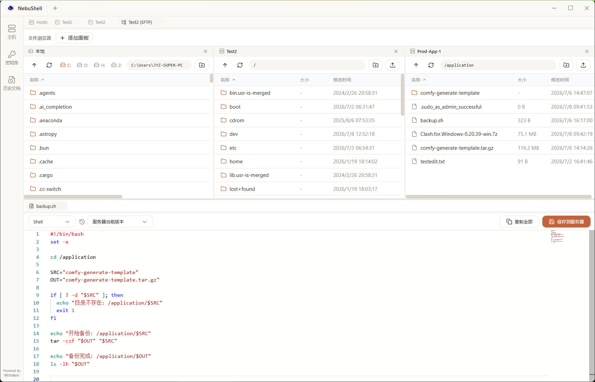
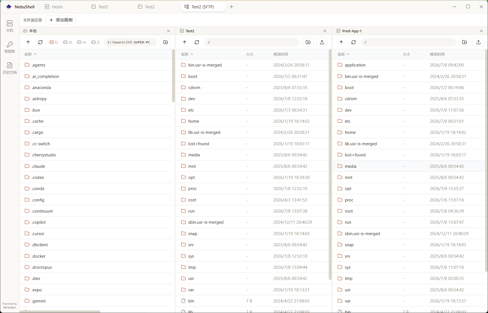
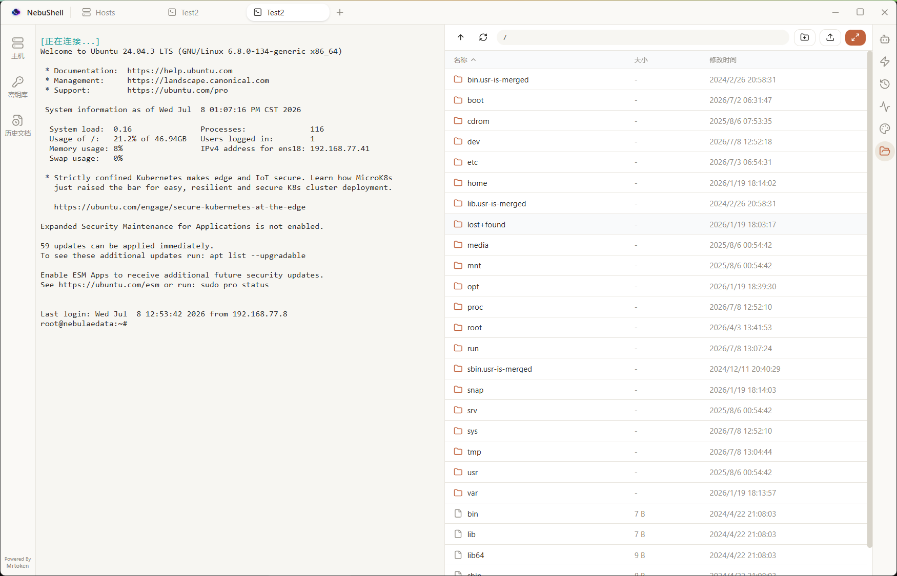
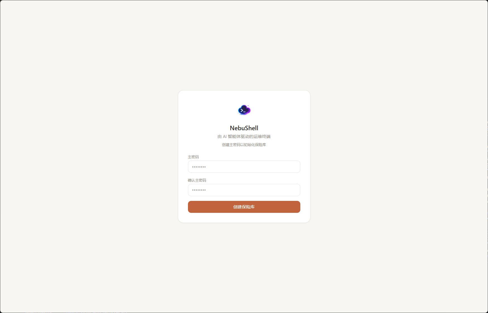
A modern SSH workspace that keeps every session — and every agent — moving.
An OpenAI-compatible agent that runs commands, reads output, asks questions, and presents plans — always plan-and-confirm.
xterm.js terminals with fit, web links, and themes. Split any pane right or down, keep splitting recursively into any grid, and drag tabs between panes — drop on an edge to make a new split, on the center to merge.
Hosts, passwords, and SSH keys are protected by a master password. Your keychain never leaves your machine.
Dual-pane remote/local management with drag-and-drop transfers and a live transfer queue. Create files and folders from the toolbar or by right-clicking blank space.
The VS Code editor built in — edit remote and local files with syntax highlighting, right inside a tab. Ctrl+S saves a remote file straight back to the server.
Per-core CPU with a live sparkline, a memory donut, network up/down rates, per-mount disk usage with read/write I/O, and a searchable process manager you can kill from.
Per-server persistent command history — tagged User or Agent, local plus the server's
own ~/.bash_history. Triple-tap Ctrl for a palette that searches history
and runs quick actions; picks drop into the prompt without executing.
Recent updates — July 2026.
The file listing gains a New file button next to New folder, and right-clicking blank space (including an empty directory) offers New file / New folder. Right-clicking a file still shows its own menu (open / download / rename / delete), so the two never collide. Both panes check for a name clash first, so creating a file can never blank out an existing one.
With a remote file open in the editor, Ctrl/Cmd+S now saves it straight back over SFTP and snapshots a history version, exactly like the save button. Saving is blocked while the file is still loading, so a placeholder can never overwrite your file.
The terminal now reserves two blank rows at the bottom, so the prompt no longer sits flush against the window edge. It is reserved in rows, not pixels, so the gap stays correct at any font size and is reapplied on resize, split, and font changes.
The terminal's paste shortcut now calls preventDefault(), stopping the browser's native paste-as-plain-text from firing on top of our own paste handler. Ctrl+Shift+C got the same treatment.
Split panes now keep splitting. Each pane's tab strip (and the top bar) gains right / down split buttons that work on the panes you already split, so you can build any grid. Drag a tab by mouse from one pane into another — drop on an edge to carve a new split, on the center to merge. Splitting a single-tab terminal pane duplicates the session into the new pane, and the dividers have a wider grab zone for easier resizing. (Dragging is pointer-based rather than HTML5 drag-and-drop, so it works reliably inside the app window.)
Commands are saved locally per server (surviving restarts) and shared across that
host's tabs, each tagged User or Agent — agent-run commands included. The history
panel adds a Local / Server split, the Server tab reading the box's own
~/.bash_history. Click to drop a command into the prompt without running
it.
Tap Ctrl three times in a terminal to pop a tabbed palette — search merged local + server history, or fire quick actions. Tab/Shift+Tab switch tabs, ↑/↓ + Enter pick, and the chosen command is inserted into the prompt, never auto-run.
The agent no longer hangs on blocking commands (tail -f,
top, interactive prompts). It probes whether the shell is at a prompt and
runs a recovery ladder (Ctrl-C → Ctrl-Z + kill → pager/editor exit) to
take the prompt back, reporting a clear interrupted / stuck state instead of
silently timing out.
The monitor panel now shows system info, per-core CPU with a live sparkline, a memory donut (used/cache/free), network up/down rates & totals, per-mount disk usage with read/write I/O, and a process manager with kill / force-kill — all theme-aware.
Local↔remote transfers now use concurrent fastPut / fastGet,
saturating high-latency links instead of one 32 KB chunk per round-trip. Large
files move dramatically faster.
The transfer UI shows live throughput (MB/s) and estimated time remaining — not just a percentage.
Transfers are grouped by the window that started them into a collapsible dock; finished ones stay as browsable history until you clear them.
Closing a tab with an in-progress transfer now asks for confirmation, since closing tears down the SFTP connection.
The embedded SFTP panel shows transfer progress too, and the toolbar upload button supports multi-select with a progress bar.
A new Settings page tunes SFTP transfer concurrency (default 64, range 1–256), and the value is persisted.
Built-in themes now ship full 16-color ANSI palettes, fixing colored (especially white) text that was invisible on the light theme.
Free and open source under the MIT license. Download for your platform and connect your first host in seconds.